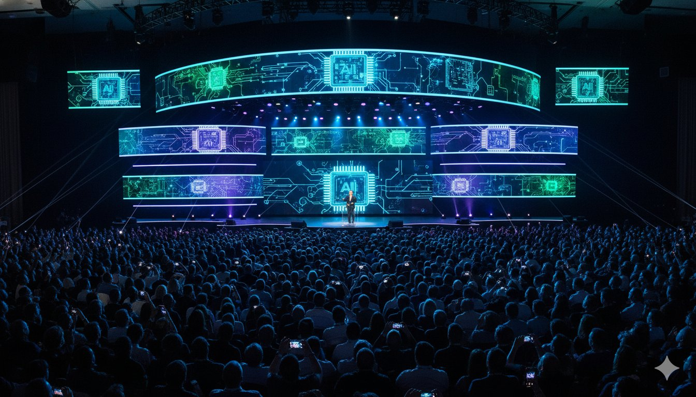

NVIDIA GTC 2026에서 에이전트 AI 플랫폼이 공개되며 자율 AI 시대가 본격화됩니다. 백악관은 국가 AI 정책 프레임워크를 발푘했고, Apple은 Google Gemini 기반의 새로운 Siri를 준비 중입니다. AI 신약 후보물질들이 임상시험에 진입하고, Morgan Stanley는 2026년 AI 대도약을 경고합니다.
NVIDIA GTC 2026 unveils agentic AI platforms ushering in the autonomous AI era. The White House releases its national AI policy framework, Apple prepares a Gemini-powered Siri overhaul, AI drug candidates enter clinical trials, and Morgan Stanley warns of a major AI leap in 2026.

NVIDIA가 GTC 2026에서 Agent Toolkit을 공개했습니다. 이 오픈 플랫폼은 자율적으로 판단하고 행동하며 복잡한 엔터프라이즈 작업을 수행하는 AI 에이전트를 구축할 수 있게 해줍니다. LangChain과 함께 개발된 AI-Q Blueprint는 에이전트 검색 정확도 리더보드에서 1위를 차지했습니다.
NVIDIA unveiled its Agent Toolkit at GTC 2026 — an open platform for building autonomous AI agents that can reason, act, and complete complex enterprise tasks. The AI-Q Blueprint, built with LangChain, tops the DeepResearch Bench accuracy leaderboards using a hybrid approach that cuts query costs in half.
Adobe, Atlassian, SAP, Salesforce, Siemens 등 주요 소프트웨어 기업들이 NVIDIA Agent Toolkit을 도입하여 엔터프라이즈 AI 에이전트를 구춝하고 있습니다. 또한 NVIDIA는 NemoClaw를 발표해 자율 에이전트의 로컬 개발과 배포를 위한 완전한 스택을 제공합니다.
Leading platforms including Adobe, Atlassian, SAP, Salesforce, and Siemens are advancing enterprise AI agents with the toolkit. NVIDIA also announced NemoClaw, providing a complete stack for locally developing and deploying autonomous, long-running agents.
핵심 요약: GTC 2026의 최대 테마는 '에이전트 AI'입니다. 단순 챗봇을 넘어 자율적으로 업무를 수행하는 AI 에이전트 시대가 산업 전반으로 확산되고 있습니다.
Key takeaway: The biggest theme at GTC 2026 is agentic AI. Beyond simple chatbots, the era of autonomous AI agents that independently execute tasks is spreading across industries.
미국 백악관이 인공지능에 관한 국가 정책 프레임워크를 발표했습니다. 이 프레임워크는 의회에 대한 권고사항으로 AI 애플리케이션 개발을 촉진하기 위한 규제 샌드박스 설립과 연방 데이터를 산업계에 공개하기 위한 자원 제공을 포함하고 있습니다.
The White House has released its national policy framework on artificial intelligence. The framework includes recommendations for Congress such as establishing regulatory sandboxes to foster AI application development and providing resources to make federal data accessible to industry.
이번 프레임워크는 AI 혁싨을 촉진하면서도 안전성을 확보하려는 균형 잡힌 접근을 보여줍니다. 특히 규제 샌드박스는 스타트업과 중소기업이 규제 부담 없이 AI 기술을 시험할 수 있는 환경을 제공합니다. 한편 Anthropic이 국방부 등 정부 기관을 상대로 제기한 소송의 임시 구제 심리가 3월 24일로 예정되어 있어, AI 기업과 정부 간 관계도 주목됩니다.
The framework demonstrates a balanced approach to promoting AI innovation while ensuring safety. The regulatory sandboxes will allow startups to test AI technologies without heavy regulatory burdens. Meanwhile, Anthropic's lawsuit against the Pentagon and other agencies has a temporary relief hearing scheduled for March 24, highlighting the evolving relationship between AI companies and government.
핵심 요약: 백악관 AI 프레임워크는 미국의 AI 리더십을 강화하기 위한 정책 기반을 마련합니다. 규제 샌드박스와 데이터 공개는 AI 스타트업 생태계에 긍정적 신호입니다.
Key takeaway: The White House AI framework lays the policy foundation for strengthening US AI leadership. Regulatory sandboxes and data openness send positive signals for the AI startup ecosystem.
Apple이 완전히 새롭게 재설계된 AI 기반 Siri를 iOS 26.4와 함께 3월 출시를 목표로 하고 있습니다. 주목할 점은 Apple이 Google의 1.2조 파라미터 Gemini AI 모델과 파트너십을 맺고, Apple의 Private Cloud Compute 인프라에서 이를 구동하여 엄격한 개인정보 보호 기준을 유지한다는 것입니다.
Apple is targeting a March release for its completely reimagined AI-powered Siri alongside iOS 26.4. Notably, Apple has partnered with Google to utilize its 1.2 trillion parameter Gemini AI model, running on Apple's Private Cloud Compute infrastructure to maintain strict privacy standards.
이번 파트너십은 AI 경쟁에서 놀라운 전개입니다. 전통적으로 경쟁 관계였던 Apple과 Google이 AI 분야에서 손을 잡은 것은 현재 AI 모델 개발의 비용과 복잡성이 얼마나 큰지를 보여줍니다. 새 Siri는 더 자연스러운 대화, 앱 간 연동, 복잡한 멀티스텝 작업 수행이 가능할 것으로 기대됩니다.
This partnership is a surprising development in the AI race. The collaboration between traditionally competing Apple and Google demonstrates the enormous cost and complexity of AI model development. The new Siri is expected to offer more natural conversation, cross-app integration, and complex multi-step task execution.
핵심 요약: Apple-Google AI 파트너십은 AI 개발의 막대한 비용이 업계 지형을 재편하고 있음을 보여줍니다. 개인정보 보호를 유지하면서 최첨단 AI를 제공하는 것이 새로운 경쟁력의 기준이 됩니다.
Key takeaway: The Apple-Google AI partnership shows how the enormous cost of AI development is reshaping the industry landscape. Delivering cutting-edge AI while maintaining privacy becomes the new competitive standard.
2026년은 AI 신약 발견의 전환점이 될 전망입니다. AI가 발견하고 최적화한 여러 약물 후보물질이 중후기 임상시험에 진입하고 있으며, 순수한 계산 기반 성과를 넘어 실질적인 의료 결과로 이어지고 있습니다. 주요 적용 분야는 종양학과 희귀질환입니다.
2026 is shaping up to be a landmark year for AI drug discovery. Multiple drug candidates discovered and optimized by AI are reaching mid-to-late-stage clinical trials, shifting from purely computational breakthroughs to tangible medical results, with primary focus on oncology and rare diseases.
기존 신약 개발에 10-15년이 걸리던 것이 AI를 통해 대폭 단축되고 있습니다. AI는 분자 구조 예측, 독성 분석, 최적 투여량 결정 등 개발 전 과정에서 혁신을 가져오고 있으며, 이는 제약 산업의 비즈니스 모델 자체를 변화시키고 있습니다.
Traditional drug development timelines of 10-15 years are being dramatically shortened through AI. AI is driving innovation across the entire development process — from molecular structure prediction to toxicity analysis and optimal dosage determination — fundamentally changing the pharmaceutical industry's business model.
핵심 요약: AI 신약이 임상시험에 진입한 것은 AI가 과학 연구에서 실질적 가치를 창출하기 시작했음을 의미합니다. 의료 AI의 황금기가 열리고 있습니다.
Key takeaway: AI drug candidates entering clinical trials signals that AI is beginning to create real value in scientific research. A golden era for medical AI is dawning.
Morgan Stanley가 2026년에 AI 대도약이 다가오고 있으며 세계 대부분이 이에 대비하지 못하고 있다고 경고했습니다. 보고서는 AI 능력이 비선형적으로 발전하고 있어 기업과 정부가 예상보다 빠른 변화에 직면할 것이라고 지적합니다.
Morgan Stanley has warned that a major AI breakthrough is approaching in 2026 and most of the world is not ready. The report points out that AI capabilities are advancing non-linearly, meaning businesses and governments will face changes faster than anticipated.
이 보고서는 OpenAI의 연간 매출 $25B 돌파, Anthropic의 $19B 연간 매출 근접 등 AI 기업들의 폭발적 성장을 근거로 들고 있습니다. 특히 효율적인 소형 모델과 프론틨어 대형 모델이 공존하는 '모델 클래스 분화'가 2026년의 핵심 트렌드가 될 것이라고 전망합니다.
The report cites explosive growth in AI companies as evidence, including OpenAI surpassing $25B in annualized revenue and Anthropic approaching $19B. It forecasts that the coexistence of efficient small models and frontier large models — a "model class divergence" — will be the defining trend of 2026.
핵심 요약: Morgan Stanley의 경고는 AI 발전 속도가 대비 수준을 초과하고 있음을 시사합니다. 기업과 정부 모두 AI 전략을 가속화해야 할 시점입니다.
Key takeaway: Morgan Stanley's warning suggests the pace of AI advancement is outstripping preparedness. Both businesses and governments need to accelerate their AI strategies.
NVIDIA GTC에서 주요 기업들이 에이전트 AI를 채택하며, 단순 챗봇 시대를 넘어 자율 업무 수행 AI가 엔터프라이즈의 새로운 기준이 되고 있습니다.
With major companies adopting agentic AI at NVIDIA GTC, autonomous task-executing AI is becoming the new enterprise standard, moving beyond the simple chatbot era.
백악관의 AI 프레임워크 발표는 혁신과 안전의 균형을 추구하며, 규제 샌드박스는 AI 스탄트업에 새로울 기회를 제공합니다.
The White House AI framework balances innovation and safety, with regulatory sandboxes opening new opportunities for AI startups.
Apple-Google Gemini 파트너십은 AI 개발 비용이 경쟁 구도를 재편하고 있음을 보여주며, 전략적 제휴가 필수가 되고 있습니다.
The Apple-Google Gemini partnership shows how AI development costs are reshaping competition, making strategic alliances essential.
AI 신약의 임상시험 진입은 AI가 실제 과학적 성과를 창출하기 시작했음을 의미하며, 의료·금융 등 실물 산업에서의 AI 가치가 본격화됩니다.
AI drugs entering clinical trials means AI is beginning to produce real scientific results, with AI value materializing across healthcare, finance, and other real-world industries.